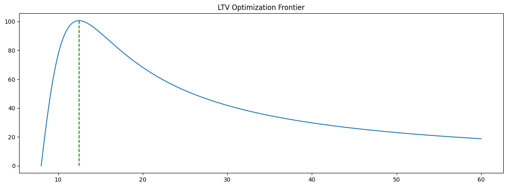
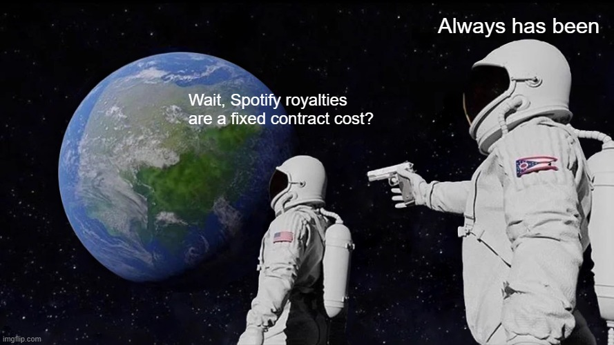

Introduction

Innovation generally comes from friction in problems that we encounter. Trains were invented to travel faster. Cell phones to help us communicate on the go. For Daniel Ek, it was boredom. By age 23, Daniel found himself looking for his next adventure. He decided that the music industry would be a fun one, since it had been disrupted by the dot-com boom. Sites like Napster and Limewire were “profiting” from piracy. Ek knew that in order to beat the current industry trend, he needed to win through stellar user experience while still being in the bounds of the law.
After much negotiation with the music industry, Ek launched Spotify in Europe in 2008. Ek’s vision for Spotify was simple: ease of playback. No downloading. Just click and listen. Instead of a model like iTunes (yes, iTunes, not Apple Music quite yet), where a portion of the fee to download music was sent to music labels, Spotify would transfer royalties on a monthly basis to music labels based on the “usage” of the music on the platform.
With popularity fueling the momentum of Spotify in Europe, the company gained enough attention from music labels in the United States to expand. In 2011, Spotify entered the US market and started to take off. By 2015, Spotify had ~75 million active users and was growing quickly. With product additions like Discover Weekly, Spotify began positioning itself as not only a music library but also a music curator.
Currently, Spotify boasts a whopping ~600 million active users globally. With a ~30% market share of the music/audio industry, Spotify is well alone at the top. Their stock price is worth over $400 a share, and they continue to post profitable quarters.
The Melody of Money: The Business Model of Spotify
The Two-Sides of the Same Song
While the product of Spotify is impressive and innovative in its own respect, without a proper business model, it wouldn’t be the king of streaming it is today. What makes Spotify an interesting case study is the difficulty of the market it operates in. As already mentioned, with the dot-com boom, the music industry was in a bit of chaos. Music labels wanted to make money off the songs they produced but didn’t have the tech stack necessary to share and scale their songs. Web applications wanted to share music without the hassle of organizing royalty deals with each individual label. What the market was looking for was a platform that could provide solutions and ease the tensions between the two sides of the music economy.
In this light, Spotify is no longer just an audio streaming application. It is a two-sided marketplace platform. Therefore, in order for Spotify to be a successful business, it needs to balance the competing needs of its marketplace. That is, it must provide an audio experience at the right price for consumers while also paying for the right music at the right price from the music labels.

The Value of Music
We’ve established the environment or domain in which Spotify operates. Before jumping into the unit economics specifics of how Spotify prices its products, it is helpful to view the business in the context of the value stick.

In the value stick framework, we break down the business operations for a firm like Spotify into four key areas: a consumer’s willingness to pay (WTP), the price we set as a firm, the cost we incur from our suppliers, and the willingness to sell (WTS) of our suppliers. Viewing Spotify’s business this way is helpful because it guides our decision-making on several business offerings: should we accept low margins to increase customer delight and bank on low margins with high volume? Do we increase our margins and settle for lower volume? Is it possible to lower costs to increase firm margin while maintaining a consistent price?
For Spotify, the goal was to balance speed of adoption with the stickiness of retention. Essentially, they needed a product that was easy to try and use, where users could easily transition to a more “premium” product if they desired. To do this, Spotify adopted the freemium approach.
From the perspective of the value stick, Spotify essentially moved to a two-value-stick approach. One stick represents high “customer delight” through a free version supported by ads. The other reflects high firm margin via a fixed monthly fee for ad-free audio experiences, among other perks. The freemium approach would allow users to get experience with the platform “free of charge” but not the frictionless experience of premium.
On the supplier side, the costs remain the same across the “dual” value stick proposition. Whether listeners are on the free or premium tier, the supplier surplus remains the same, hopefully encouraging artists to join the platform.
Margins in Music: The Unit Economics of Spotify
Note: For simplicity, we use “synthetic” numbers merely for demonstration of understanding the unit economics of this kind of business model. For a full run down of Spotify’s financials, see here.
We’ve established the environment and value proposition of Spotify to appeal to both artists and listeners. Now, we can dive into the fun part of defining and evaluating the revenue and cost structure of the business. We start with the simplest equation in business: the profit equation.
\[ P = R - C \tag{3.1}\]
\(P\) represents the profit, \(R\) represents the revenue, and \(C\) reperesents the cost. Once we define \(R\) and \(C\), we know what Spotify’s profit will be.
Based on what we established from the previous section, Spotify has two primary streams of revenue: ads and premium membership. Ads generate revenue based on results from the real time bid ad auction (see my last post for an explanation on ad auctions). Our premium membership would be set at a fixed flat rate billed on a monthly basis. From a cost perspective, we have our fixed costs on things like servers, sales and marketing, etc., along with our variable costs on artist royalty.
LTV and CAC are Top Hits
Great, so we have ideas on where the money will come from, now are we ready for the numbers? Not quite. In order to determine the optimal way to generate revenue and manage costs (i.e., set prices and costs), we need to identify the metrics they would be impacting. For a company like Spotify that is dealing with a two-sided marketplace, the asset they are selling to each side is, well, the other side. Artists want to be on a platform where they can be discovered (a high volume of listeners), and listeners want to be where their artists are and discover new music. So, naturally, Spotify should be focused on two key metrics: Lifetime Value (LTV) and Customer Acquisition Cost (CAC).
Let’s begin with LTV. LTV essentially measures the expected revenue or profit for a given customer base. Suppose we expect our customers to last 12 months and spend about $1. Then, our expected LTV would be $12. That’s really all there is to LTV. For a company like Spotify, we’d adjust this formula a bit to account for the subscription aspect of the business. Additionally, since we have two types of customers we’d like to model, we’ll use two different LTVs. The formulas for those are shown below.
\[ LTV_{premium} = \frac{\text{Revenue} - \text{Variable Costs}}{\text{Churn Rate}} \tag{3.2}\]
\[ LTV_{Free} = \frac{\text{Average Ad Revenue} - \text{Variable Costs}}{\text{Churn Rate}} \tag{3.3}\]
Our two LTVs tell similar stories regarding how we want to optimize revenue. Both are affected by churn rate and variable costs. Premium generates revenue from membership fees, and freemium generates its revenue from ad revenue. In a perfect world, we could just keep increasing revenue (the price of premium or the price of ad space), but that doesn’t happen here. As we learn from basic microeconomic theory, as we increase price, we decrease demand, which means our churn rate increases. The speed at which this occurs is the price elasticity of demand (PED).
\[ PED = \frac{\Delta Q}{\Delta P} \]
The general rule is that if the absolute value of the PED is greater than 1, we are dealing with elastic demand (customers are sensitive to price changes). If the ratio is less than 1, it is inelastic demand (customers are insensitive to price changes). Obviously, churn rate is affected by other elements of the business, but price is one of the biggest drivers of a change in churn rate.
In short, our two LTVs serve as “North Star” metrics when it comes to decisions regarding revenue and costs. If revenue does not keep up with variable costs, we have a problem. If the churn rate grows faster than our gross profit, we have a problem. LTV is excellent for understanding the fundamental relationship between our revenue streams and cost streams.
If LTV is understanding how our revenue is impacted by costs and churn, then CAC is understanding how our costs and acquistion impact our revenue. While there are a few ways we can calculate CAC, we’ll focus on the single formula below.
\[ CAC = \frac{\text{Marketing Spend} + \text{Freemium Costs}}{\text{Total New Premium Members}} \]
Essentially, this CAC tells us how much we spend on average to acquire a single new premium-paying member. The reason we chose to focus on premium-paying members is the consistency of the revenue generation. While freemium members generate ad revenue, the primary goal of the business is to convert these freemium members into premium members. Hence, we want to focus our strategies on how much it currently costs us to move freemium or non-users into premium-paying customers.
To connect the LTV and the CAC, we want to focus on the LTV of premium members to our single CAC. When we take the ratio of the two, we essentially get our ROI on customer acquisition.
\[ ROI = \frac{LTV_{premium}}{CAC} \]
The reason this is the “final” metric for understanding our profit model is that it represents the sustainability of current revenue and spending efforts. The higher the ratio, the more we gain in LTV compared to our acquisition cost. Conversely, the lower the ratio, the closer we are to spending more on customers than they are providing in value.
The Cost to Stream: Royalties
Now that we’ve established our “North Star” metrics and how they align in understaning ROI, we can begin to dive into how we should price our Spotify product. To simplify this approach, we’ll just focus on pricing our premium membership. We’ll assume that freemium members break even with their variable costs.
The first thing we need to address is a quick backtrack: why does LTV only include variable costs? To understand why LTV guides our pricing strategy, we must recognize that LTV is an incremental view of profitability. Essentially, LTV provides a unit-economics perspective on how a customer’s business increases company revenue relative to the costs they generate. So, we measure a customer’s revenue against their respective variable costs to determine if their lifetime value exceeds the incremental costs they incur for the company.
Now that we’ve cleared that up, let’s get back to business (literally). In order to know how to price, we need to know how quickly our variable costs scale with regard to user usage. In the case of Spotify, we need to know how quickly music royalties scale from streaming music.
Without getting into too many details of the process of negotiating these royalties (that’s a whole post in of itself), it suffices to say that the record labels have a lot of the power in the negotiations. Spotify and other music streaming services operate on a pro-rata model. The gist of this is that music labels get a specific cut of the revenue generated by the business. For most businesses in this industry, the typical is about a 70-30 split. So, for every dollar of revenue Spotify earns, record labels get 70 cents [1].

Wait, so the biggest cost of Spotify isn’t variable? How does that help us know how to maximize LTV and minimize CAC? Don’t we need variable costs? While on paper this 70% tax appears to be non-negotiable, Spotify’s platform power allows it to become a kind of variable cost.
The basic deal between these streaming companies and music label is this: Spotify sets aside around 70% of their revenue into a general royalties pot. The royalties are then paid out based on their respective usage. If I listen to 5 hours of Ludwig Goransson, the record label representing him gets those votes towards its revenue share. At the designated payout time (typically on a monthly basis), the pot is divided according to the “votes” of the users.
This is where the economics of the pool gets interesting. If the pool is divided by usage and Spotify has the power to influence what people listen to, then Spotify has the power to influence where the money goes. While a big part of the reason Spotify invests so much into R&D to enhance music recommendations so that users have a good experience, it is equally important for Spotify to recommend songs that play in their favor.
Spotify is the Fed?
No, Spotify isn’t the Fed… but they are for music labels. As previously mentioned, Spotify has significant control over what songs get promoted. So, while the 70% cut is there, there are real incentives for independent artists and music labels alike to gain “favor” with these recommendation algorithms. How do they “gain favor”? Simple: they give Spotify a cut of their cut.
If an independent artist or music label wants their tracks to be a bit more “promoted” in different playlists or discovery engines, they can provide a “kickback” to Spotify [2]. For this promotion, Spotify gets about 30% of an artists payout back.
There are other tactics that Spotify employs to try to minimize their payouts or contractual obligations (see [3] or [4]). For now, it suffices to say that with this simple example, Spotify has figured out how to turn a fixed contract cost into a variable cost through the power of their platform. Thus, we can update our LTV formula to be a weighted average.
\[ LTV = \frac{\text{Revenue} - (w_{org} c_{org}) + (w_{disc} c_{disc})}{\text{Churn}} \tag{3.4}\]
\(w_{org}\) is the proportion of usage that a given user spends on “organic” content (content that is not discounted). \(w_{disc}\) then is the proportion of usage that a given user spends on discounted content. The respective \(c\) variables are the cost associated with that content. In this view, our fixed contract cost of 70% has now become a true variable cost.
The Pricing Decision
Let’s take a moment to recall what we’ve done so far. We’ve learned a bit of the backstory of Spotify, determined the environment in which it operates, and identified some north star metrics for business growth. With regard to profitability, we showed that the major cost for Spotify is their fixed royalty cost. By changing that fixed cost to a variable one using their platform influence, Spotify can get back some of that royalty cost.
From the LTV perspective, the costs have essentially been figured out as a function of revenue. That leaves us with revenue and churn left to discuss. Revenue is something we entirely decide so it’s a tactical input we can manipulate in this equation. Churn on the other hand, is also a function of revenue. As mentioned earlier, as price increases, demand decreases (and thus churn increases).
This problem can become very tricky if we let too many variables become influential, so let’s simplify the problem a bit. Let’s assume the weighted average costs are constant with \(w_{org}\) = .7 and \(w_{disc}\) = .3. Now all we have to do is find the right price point that offsets that negative effects of churn. Simple enough, right?
Let’s walk throught the math of it. What kind of math do we need to find an optimal point of a “consistent” function? Good ol calculus. If we take the derivative of the LTV equation with respect to revenue, set it equal to 0, and solve, we get an equation that can guide our decision in setting \(R\). Below is the derivation.
\[\ln(CLTV) = \ln\left(\frac{R - V}{\lambda(R)}\right)\] \[\rightarrow \ln(CLTV) = \ln(R - V) - \ln(\lambda(R))\] \[\rightarrow \frac{\partial \ln(CLTV)}{\partial R} = \frac{1}{R - V} - \frac{1}{\lambda(R)} \cdot \frac{\partial \lambda}{\partial R}\] \[\rightarrow \frac{1}{R - V} - \frac{1}{\lambda(R)} \cdot \frac{\partial \lambda}{\partial R} = 0\] \[\rightarrow \frac{1}{\lambda(R)} \cdot \frac{\partial \lambda}{\partial R} = \frac{1}{R - V}\] \[\rightarrow R - V = \frac{\lambda(R)}{\frac{\partial \lambda}{\partial R}} \tag{4.1}\]
We took the natural log of our equation to make the derivation easier. All this math basically is summed up at the last line. \(R-V\) is our profit margin. \(\lambda(R)\) is our churn rate. \(\frac{\partial \lambda}{\partial R}\) is the rate of change of churn with respect to price. Put simply, it is how fast your churn rate spikes for a given price change. Since we don’t know the actual function behind the churn rate, we can only “guess” as to what the derivative of the churn rate function is.
While the equation might be nice to look at, the story is even better. This equation says that our profit margin is equal to the ratio of our current churn rate and the rate at which churn changes. This means that our profit margin is always bounded by the current churn and the change in churn due to price changes. So, the power comes in maximizing the ratio on the right side.
This may seem like counterintuitive thinking since we want low churn and low changes in churn rate. Yes, we do want that, but if this equation holds true, we want the equation that can maximize the difference between \(R\) and \(V\).
Let’s roll with a simple example. Let’s say our current churn rate is .02, meaning 2% of our users churn each month. If the rate at which people churn with a $1 price increase is low, say .001, then our ratio is 20. This means that our profit margin can be at most $20. So, if we were to be able to approximate the rate of churn, we could use these values to get a value that maximizes our profit margin which in turn maximizes our LTV.
Now, suppose we were able to accurately “predict” what our rate of churn would be and our variable cost in the future. Using the approach above, we can plot as a function of \(R\) (price) where this optimal point would be. Below in Figure 4.1, we show this based on a variable cost of 8, churn rate of .02, and a rate of churn .001. (Note: We assume a quadratic churn function in the graph below, so the numbers will be slightly different than in the example above.)
This scenario assumes we start with a base price equal to our variable cost. As we increase this price, our margin obviously grows and contiues to outgrow the effect of churn increase due to price. It eventually reaches the peak of this function (as shown in Equation 4.1). This is the most we could increase our profit margin to without churn out pacing our profit gains. (Note: In this example with a quadratic churn function, the optimal profit margin is around $12.
But this is so important to see! While a lot of assumptions were baked into this equation/scenario, it illustrates the key point that Spotify can control their profit margins by influencing churn. If they provide a product that is so good that it would hurt more to leave than to pay an extra $1, then their profit margin can continue to grow!
Conclusion
We made it! If you made it through the entire post and are new to the pricing world, you’ve probably begun to realize just how much goes into pricing a product. Pricing is an absolutely important strategic decision to make and requiress looking at the entire system of the busines. To do this, we identified the core environment in which Spotify operates. We then touched on how Spotify positions itself in this market through the lens of a value stick. We proceeded to go into the “math” of the operation of money-making by introducing the profit equation, north star metrics for Spotify, followed by analyzing the cost structure of Spotify. Finally, we derived an equation that, after settling on some other key unknowns, showed that our profit margin can be maximized by controlling for churn.
Overall, we hope this post has demonstrated an rigorous, analytical, and holistic approach to pricing. While we didn’t dive into every detail and every scenario, the process we showed should have given you a taste for the weight of these kinds of decisions in business.
References
[1]
Spotify AB, “Loud & clear: Spotify’s music economics report.” [Online]. Available: https://loudandclear.byspotify.com/
[2]
Spotify for Artists, Discovery mode: Terms and conditions for algorithmic promotion. Spotify AB, 2024. Available: https://artists.spotify.com/en/help/article/discovery-mode
[3]
Mechanical Licensing Collective, “The MLC v. Spotify USA inc., case no. 1:24-cv-03779.” United States District Court for the Southern District of New York, 2024.
[4]
Spotify Policy Group, “Modernizing music payouts: The 1,000-stream threshold policy,” Spotify AB, Policy Update, 2024.